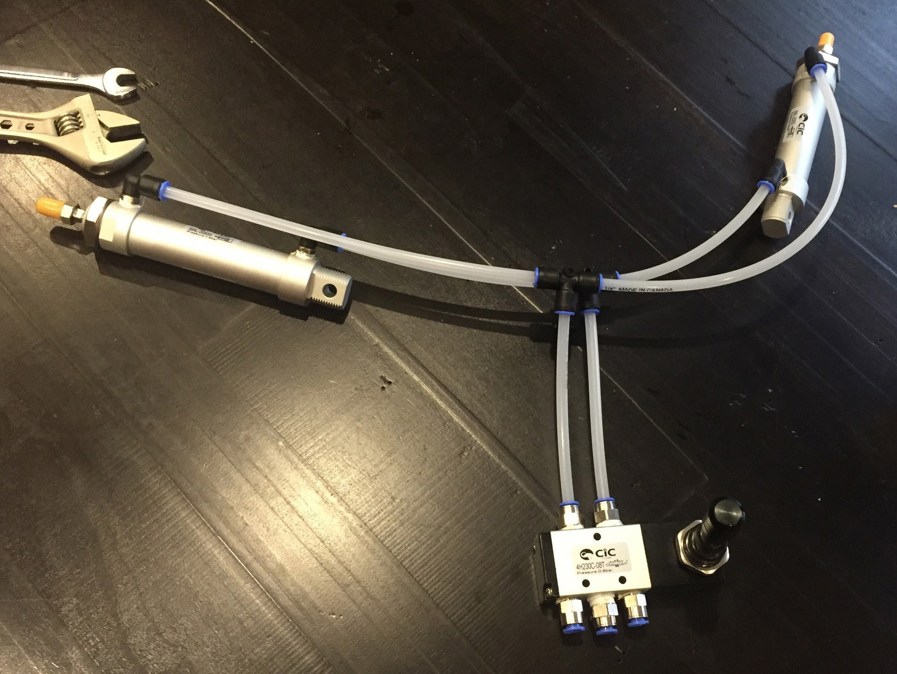
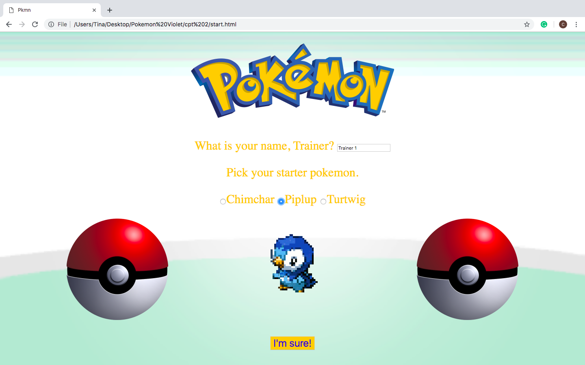

T. Tissington
Projects
Articulating Wings
A project I am really passionate about is the creation of wearable articulating wings. I took on this project for a costume I created for Fan Expo Canada. Originally I was going to make the wing frame out of PVC pipe, drawing a cord through it, so when I pull the cord, the wings expand. I quickly decided that I wanted to make the wings more intricate and more convenient for use at a fan convention where I’ll be wearing them so I redesigned them to use a pneumatic system. The wings are powered by a Co2 paintball canister which means I had to use a large resistor to make sure the wings didn’t shoot up like a paintball. I used a switch to activate the pistons attached to the wing frame in order to control the wing articulation. The wings worked beautifully and made my costume complete! Wearing the wings, I won second place at the Master of Cosplay competition at Fan Expo Canada as well as Best Prop/Armour at the cosplay competition at Kimicon.
Pokemon Game
In 2018, I coded a game I call Pokemon Violet using Javascript, HTML, and CSS. Pokemon Violet is a simple Pokemon influenced game that has the player catch six pokemon to fill the maximum amount you can have in your party and defeat the gym leader, Giovanni. I was able to store the player's party of pokemon and each pokemon’s health points in arrays. In order to replicate a real pokemon game, I created a battle system, a traveling component, and a gym battle. If I were to make another game similar to this one, I would make the visuals more appealing. Because I completed this game under a limited time frame, some of the pokemon are different sizes and float on uneven ground. Regardless of this, I am extremely proud of the game I created with the limited time frame I completed it in.